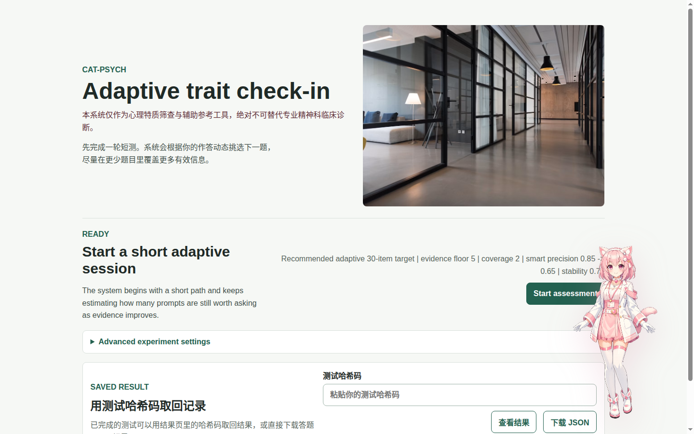
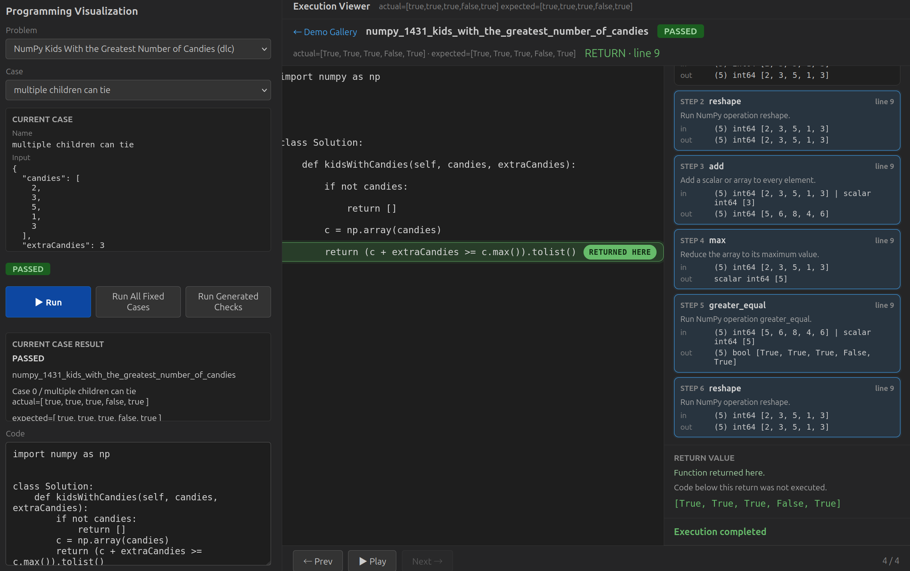
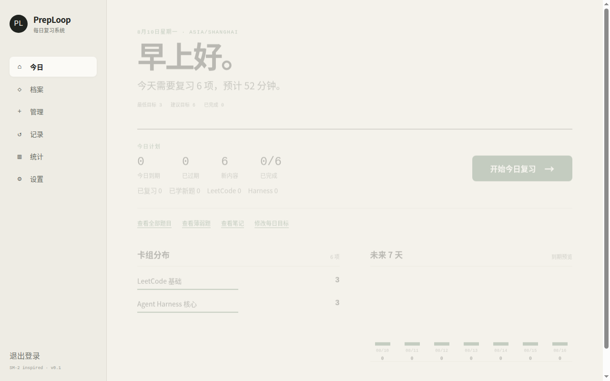

CAT-Psych
[ONLINE]Adaptive Big Five Personality Assessment
- MIRT / CAT adaptive item selection
- 50-item Big Five starter bank
- Early stop and stability checks
- Result report and shareable result page
- Chinese-first questionnaire

東雲 Personal Research & Engineering Archive
Agent systems · Machine learning · Runtime · Hardware experiments
这里是东云的软件、实验、研究笔记、Benchmark 与技术写作档案。
Adaptive Big Five Personality Assessment


LeetCode-style Programming Visualization

Daily Spaced Review
52C / 104T · 64 GB HBM2e
STREAM · oneDNN · OpenVINO · LLM inference · PyTorch · TensorFlow · HPC
Codex Responses ↔ DeepSeek compatibility layer
Natural-language math → canonical LaTeX
Job collection · ranking · candidate memory · human approval
Claude Code → GPT / DeepSeek / MiMo / Gemini
| No. | Project | Category | Status |
|---|---|---|---|
| 01 | CAT-Psych | Application | Online |
| 02 | Programming Visualization | Application | Demo |
| 03 | PrepLoop | Application | Online |
| 04 | Xeon Max 9470C Benchmarks | Benchmark | Published |
| 05 | DeepSeek Codex Adapter | Agent | Source |
| 06 | Qwen3 LaTeX Correction | ML | Report |
| 07 | JobHunter Agent Harness | Agent | Source |
| 08 | Claude Multi-Provider Router | Agent | Source |
Name: Xu Jianzhou / 东云
Interests:
Agent systems · Machine learning · Computer hardware · Psychology